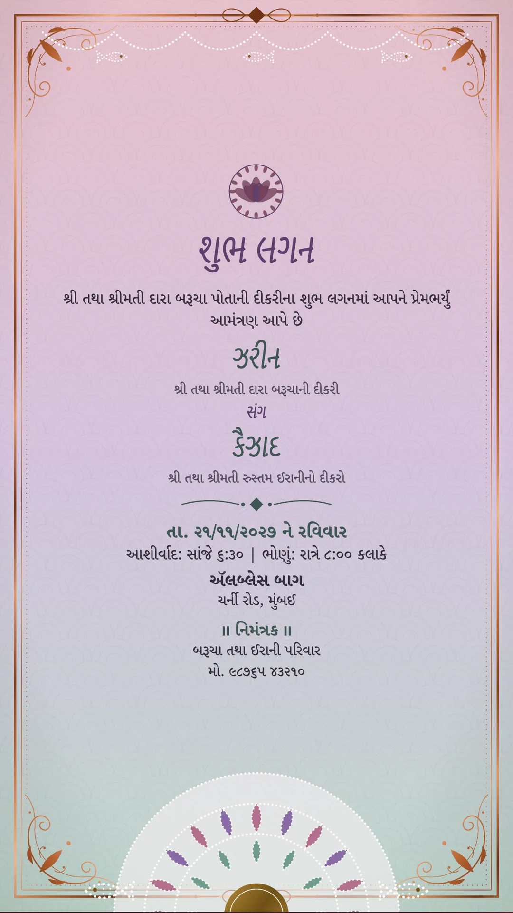
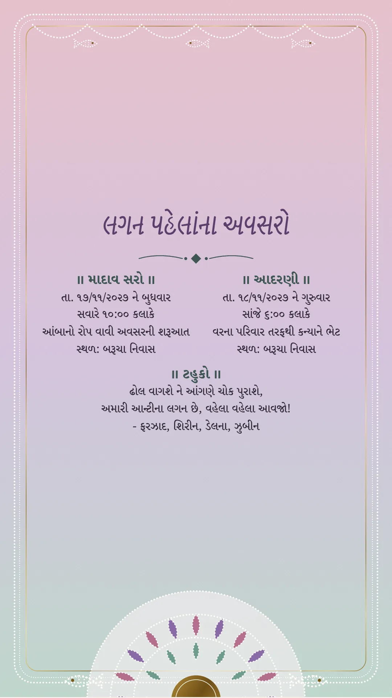
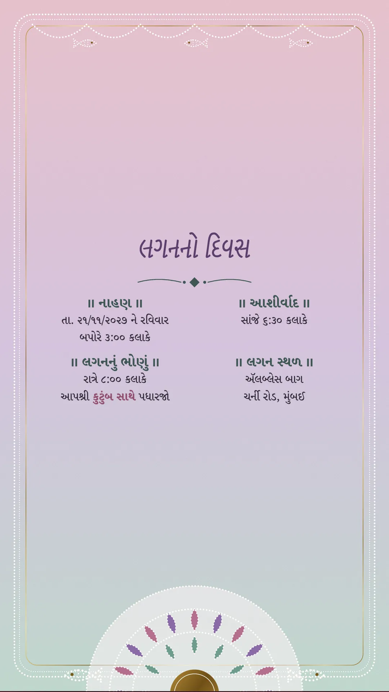
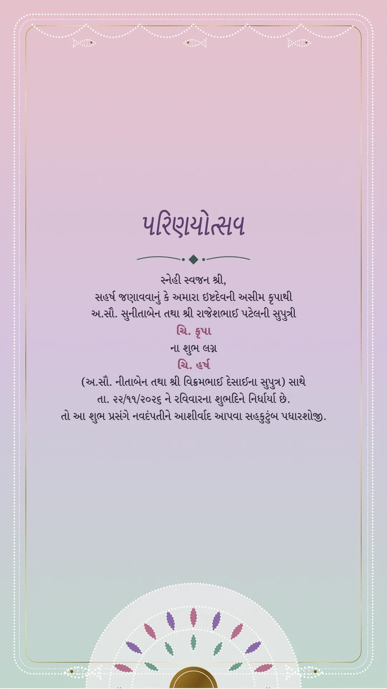
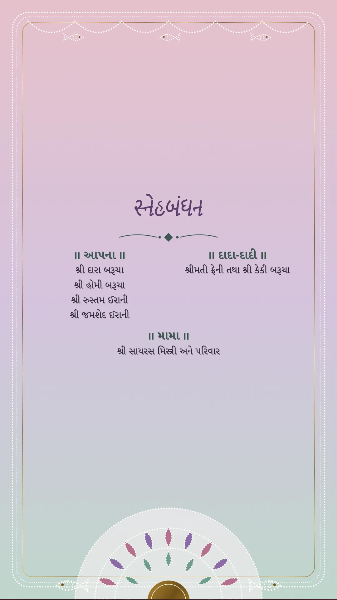
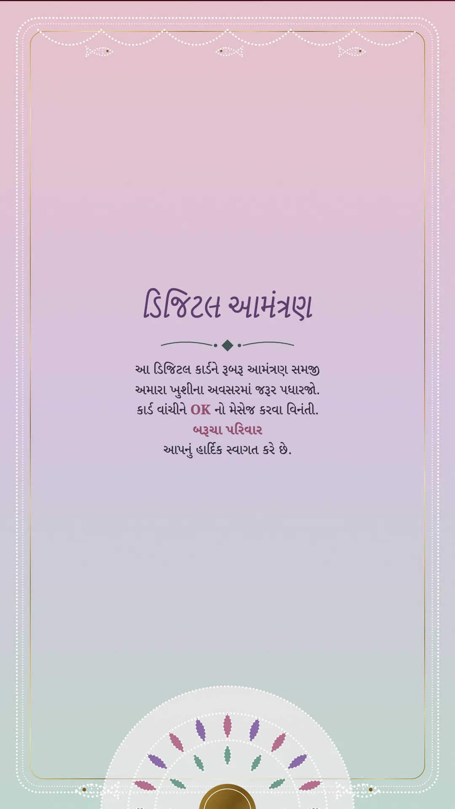

Designs › Wedding (Vivah) › Parsi Lagan Pastel Chalk
Parsi Lagan Pastel Chalk: Gujarati wedding card

- Ceremony: Wedding (Vivah)
- Language: Gujarati
- God or sacred symbol: Floral / no deity
- Format: WhatsApp image (1080 x 1920 px) and 5 x 7 inch print PDF
- Pages: 6 (cover, functions, wedding-day programme, letter, family names, closing message)
About this design
The background shades from blush pink at the top through lilac to pale mint at the bottom. Two borders of white dots, like chalk, run round the edge, with a thin gold line inside them. Along the top the dots form a scalloped garland, with three small dotted fish below it. At the bottom sits a half rangoli medallion in white dotted circles, with leaf-shaped petals in rose, lilac and green and a gold disc at its centre. The same frame, fish and rangoli appear on all six pages.
The cover has no invocation and no god in the art. A small plum lotus emblem sits above શુભ વિવાહ in large plum Farsan letters, and the names ચિ. કૃપા and ચિ. હર્ષ are in dark slate green with the parents' lines in small type beneath. The date, the times, the venue and the નિમંત્રક block follow in Noto Serif Gujarati. The inner pages use the same plum headings and slate text, set in two columns wherever there is a list of events or names.
The sample wording is the shared Gujarati Hindu kankotri text, not Parsi wording, so plan to rewrite more than the names. On the cover, change the જાન આગમન and હસ્તમેળાપ line to your own ceremony and time. On the functions page, replace મંડપ મુહૂર્ત and રાસ ગરબા with your own functions. On the programme page, change જાન આગમન and હસ્તમેળાપ again, and in the letter remove or reword the line about ઇષ્ટદેવ. The Patel and Desai names, the party plot in Surat and the children's ટહુકો are placeholders too.
It suits Parsi families who want their wedding card in Gujarati with a pastel look and nothing religious in the artwork. Gulabi Kankotri is the closest sibling, also six pages in Gujarati in pink, but it carries a Ganesha line, a shlok and a temple shikhar, so Parsi Lagan is the one to choose for a card with no sacred figures at all. Christian families who want a light English card can look at White Chapel Silver Arch.
All 6 pages
The cover is shown above. These are the other pages exactly as the card opens in the editor, with the sample family names.





Sample wording on this card
The card opens in the editor with this text. Change any line, or switch the card to another language.
શુભ વિવાહ
અ.સૌ. સુનીતાબેન તથા શ્રી રાજેશભાઈ પટેલની સુપુત્રીના શુભ લગ્નપ્રસંગે આપને સહકુટુંબ ભાવભર્યું આમંત્રણ
ચિ. કૃપા
અ.સૌ. સુનીતાબેન તથા શ્રી રાજેશભાઈ પટેલની સુપુત્રી
સંગ
ચિ. હર્ષ
અ.સૌ. નીતાબેન તથા શ્રી વિક્રમભાઈ દેસાઈના સુપુત્ર
તા. ૨૨/૧૧/૨૦૨૬ ને રવિવાર
જાન આગમન: સાંજે ૬:૦૦ | હસ્તમેળાપ: સાંજે ૭:૩૦ કલાકે
શ્રીજી પાર્ટી પ્લોટ
રીંગ રોડ, વરાછા, સુરત
નિમંત્રક
શ્રી રાજેશભાઈ કાંતિલાલ પટેલ
શ્રી અનિલભાઈ કાંતિલાલ પટેલ
મો. ૯૮૭૬૫ ૪૩૨૧૦
The other five pages are માંગલિક અવસરો (the functions before the wedding), સોનેરી અવસરો (the wedding-day programme), પરિણયોત્સવ (the letter), સ્નેહબંધન (the family names) and ડિજિટલ આમંત્રણ (the closing message).